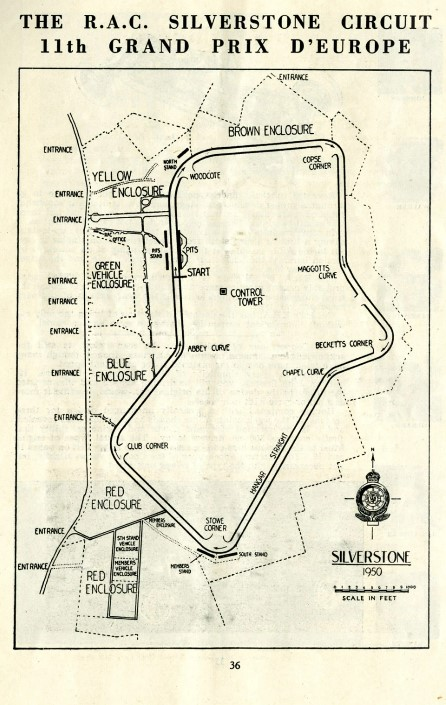

Kialakulás és az előzmények
A professzionális autóversenyzés az 1906-os Grand Prix futamokkal vette kezdetét, az első nagydíjat a magyar származású Szisz Ferenc nyerte. A két világháború között épültek meg az első legendás pályák, és ekkor rendezték meg az első Európa-bajnokságokat is. A modern Formula–1 végül 1950-ben indult el Silverstone-ban, miután az FIA rögzítette a hivatalos szabályrendszert.

1950-es évek: A „hőskor”
Az első évtizedet Juan Manuel Fangio uralta, aki öt világbajnoki címével a sportág első igazi legendájává vált. Ebben az időszakban még a nagy gyári csapatok, mint az Alfa Romeo, a Ferrari és a Mercedes domináltak a pályákon. 1958-ban mérföldkőhöz érkezett a sorozat, ekkor írták ki ugyanis az első konstruktőri világbajnokságot.
1960-as évek: A brit magáncsapatok felemelkedése
Ebben az évtizedben a kisebb brit magáncsapatok, például a Lotus és a Brabham vették át az irányítást a nagy gyárak elől. Az autókra ekkoriban a karcsú, „szivar” alakú forma volt a jellemző, és a korszak végén megjelentek az első szponzori reklámok is. A korszak legmeghatározóbb versenyzői Jim Clark, Graham Hill és Jackie Stewart voltak.
1980-as évek: A turbókorszak és a nyers erő
Az 1980-as évekre a turbómotorok váltak egyeduralkodóvá, melyek teljesítménye a fejlesztések csúcsán akár az 1400 lóerőt is elérte. A hatalmas erő és a növekvő veszélyek miatt a szabályalkotók folyamatosan korlátozni próbálták a fogyasztást és a teljesítményt. Az évtized végére a turbókat betiltották, és a sportág visszatért a szívómotoros korszakhoz.
1990-es évek: Technológiai robbanás és biztonsági reformok
Az ezredforduló Michael Schumacher és a Ferrari példátlan sikersorozatát hozta el, akik öt egymást követő évben nyerték meg a bajnokságot. Az évtized közepén Fernando Alonso vetett véget a német dominanciájának, miközben a sportágban radikális szabálymódosítások történtek a motorok méretét és a gumihasználatot illetően. A korszak végére a nagy autógyárak (BMW, Toyota, Honda) fokozatosan kivonultak, átadva a helyet az olyan új formációknak, mint a bajnoki címet nyerő Brawn GP.
2000-es évek: A Schumacher-éra és a gyári csapatok kora
A hetvenes években a rendkívül megbízható Ford-Cosworth motorok domináltak, miközben az autók aerodinamikája a szívóhatású („ground effect”) megoldásokkal forradalmasodott. A biztonság központi témává vált, így Niki Lauda súlyos balesete után elkezdték átépíteni a túl hosszú és életveszélyes régi versenypályákat. Az évtized végén a Renault bevezette a turbómotorokat, ami új technológiai irányt jelölt ki.

2010-es évek: A Red Bull sikerei és a hibrid korszak kezdete
Az évtized első felét Sebastian Vettel és a Red Bull abszolút uralma jellemezte, akik sorozatban négy világbajnoki címet gyűjtöttek be. 2014-ben a sportág átállt a V6-os hibrid turbómotorokra, ami a Mercedes AMG Petronas csapatának és Lewis Hamiltonnak a felemelkedését hozta el. A korszak végén jelentős biztonsági és látványbeli újításokat vezettek be, mint például a pilóták fejét védő „glória” (Halo) és a leegyszerűsített gumikínálat.